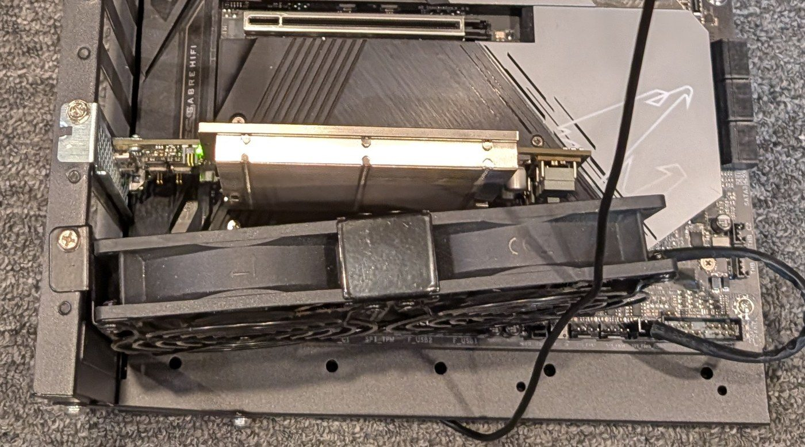
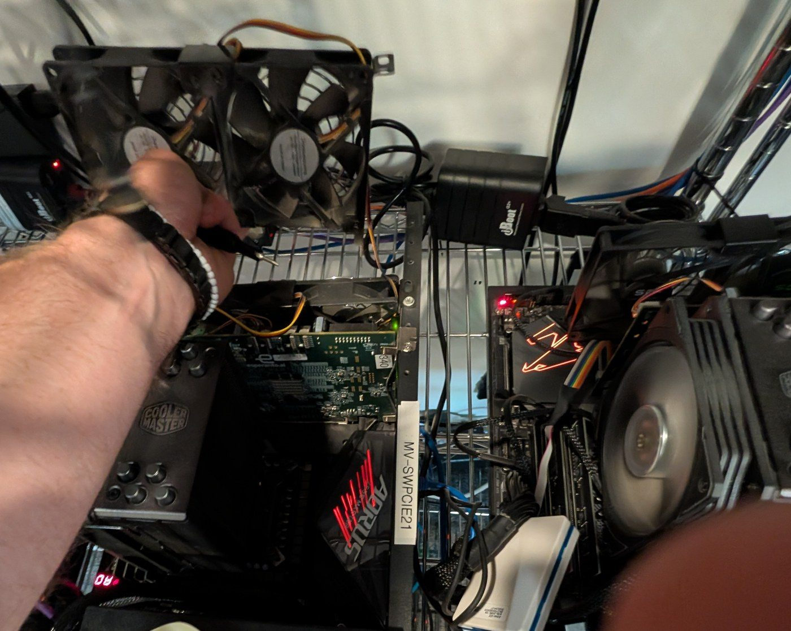
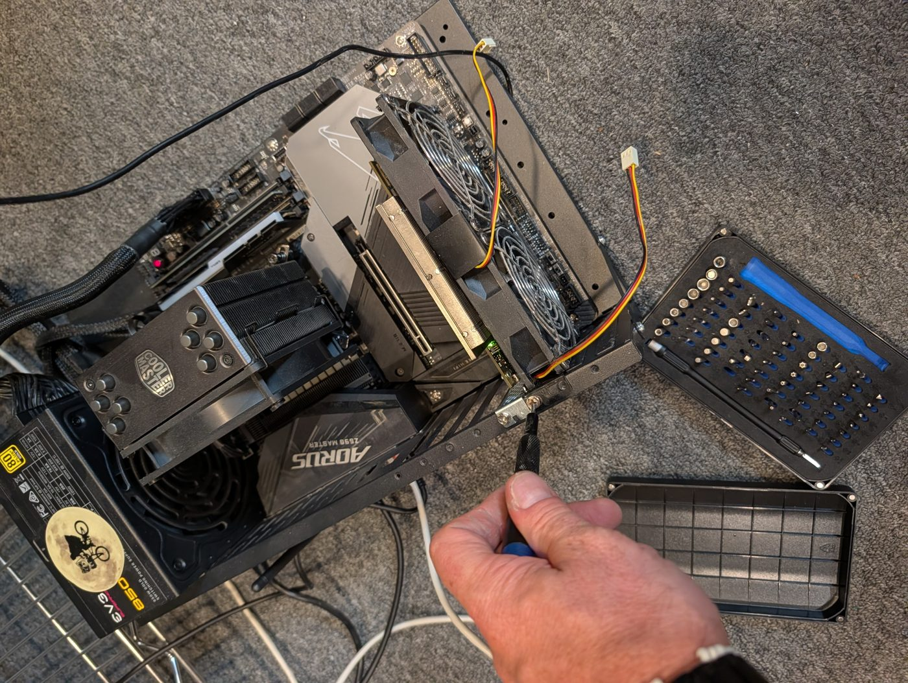
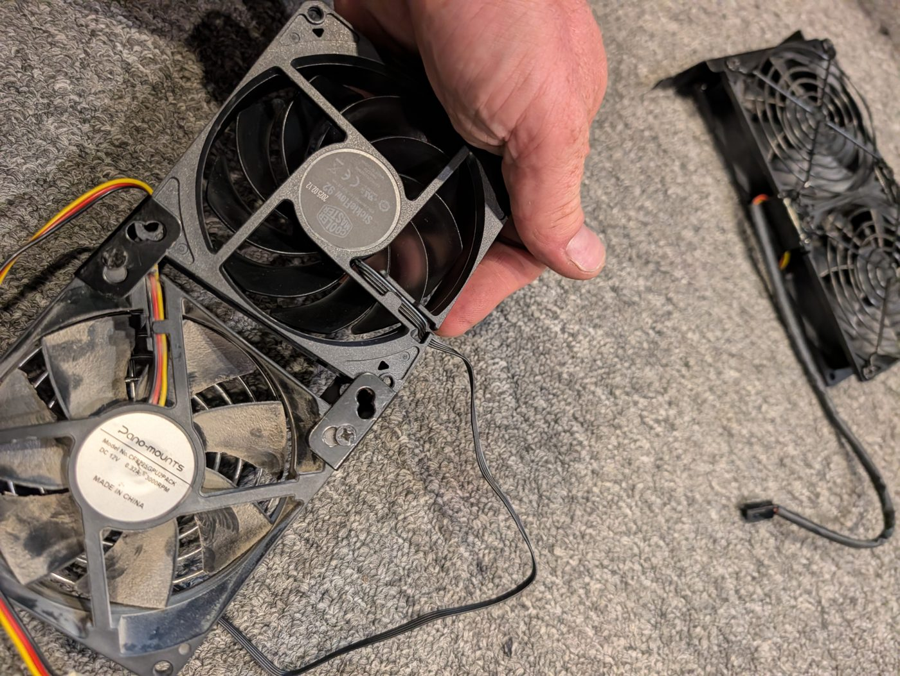
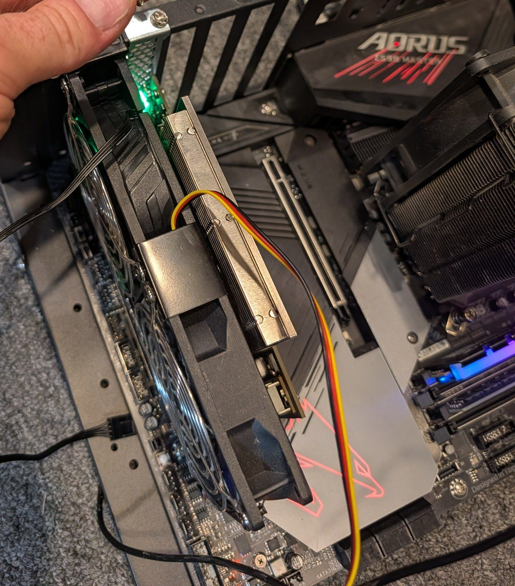
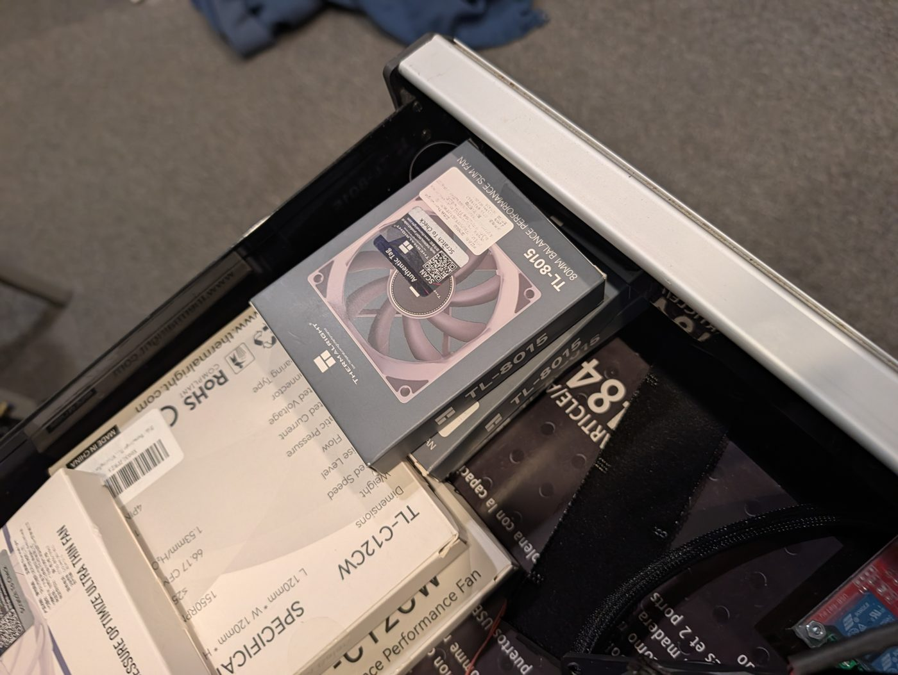
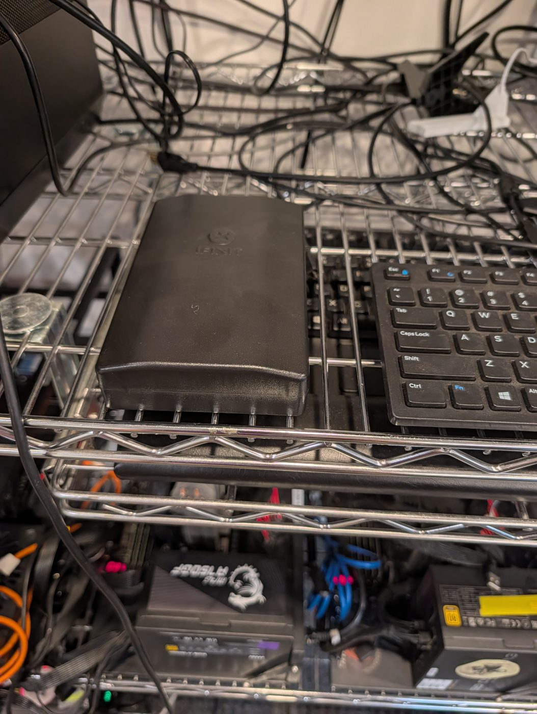

← AI Foundry lab dashboard › Worklog
Covers Fri 9 Oct 2026 (week 41), 14:55–16:01 PDT: aifoundry2 in the AI Foundry lab at Studio 45. Written Fri 9 Oct 2026, about 16:44 PDT, on the Intel, from the live collectors on aifoundry2 and aifoundry3 (one reading every 5 s), today's test logs (10 readings a second in the heavy run), the fan controller, and photos taken during the swap.
The stalling fan behind aifoundry2's card is out. A two-fan 92 mm bracket now blows straight onto the card's heatsink, and the idle card holds at 51 °C and 23.2 W: 20 °C cooler than on Thursday, and 2 °C cooler than its twin on aifoundry3. The load tests from 6 October came out far better too. The 8-minute burst test levels off at 63 °C, where on 6 October it reached 76 °C and was still climbing. The heaviest workload settles at 75 °C, where on 6 October it hit the 90 °C stop in 37 seconds. At idle the card now has about twice the cooling it needs to stay out of the doom loop. Under long full-load runs the margin is thinner, so keep a temperature stop on those. The card is back in service since 16:34, on the owner's call, and the lab's docs, dashboard and setup script say so.
The fans' effect, in one trace
With the fans in, the idle card fell from 87 to 51 °C in 8 minutes
aifoundry2, mean of the 34 minion-shire sensors, one reading every 5 s. Nothing ran on the card. With no fan on it, it heated by about 4.4 °C a minute.
- The machine was booted at 15:07, before the bracket was back in. With no fan, the idle card heated by about 4.4 °C a minute, from 44 to 87 °C, while its power rose from 21.6 to 40.8 W. That is how the doom loop starts: hotter silicon leaks more current, and the leak heats it further.
- The fans went back on at about 15:17. The card fell to 51 °C by 15:24 and stayed there. aifoundry3's card read 53 °C in the same minutes.
- Never power aifoundry2 without the bracket in place. At that rate it would have been in Thursday's runaway range within a few more minutes.
The doom-loop tests, repeated from 6 October
The same 8-minute load test now levels off at 63 °C; on 6 Oct it reached 76 °C and was still climbing
Repeated 8-second sgemm bursts with 2.5-second gaps, the test used for aifoundry1's fan repair on 2 Oct. The power is read in the gaps.
The heaviest workload now levels off at 75 °C; on 6 Oct it hit the 90 °C stop in 37 seconds
Random data on all 1,024 minions for up to 10 minutes (the shaded span), then idle. Same script, same stops. On 6 Oct the run started at 80 °C after its preheat; today the preheat reached only 71 °C.
- The same scripts as on 6 October, with only their folders changed:
burn.sh(8 s sgemm bursts with 2.5 s gaps, stopping at 85 °C) at 15:36:44, then the heavy run at 15:47:51 (random data on all 1,024 minions, 32 per shire, for up to 10 minutes, stopping at 90 °C or 73 W). All 44 bursts and the 10-minute run finished cleanly, and no stop was reached. The driver counted no errors and the card's link logged no PCIe errors. - The heavy run drew 56 → 59 W, against 65–71 W on 6 October. That gap is the doom loop running backwards: a cooler die leaks less. By the 7 October leakage law, the card leaks about 7 W less at 75 °C than at 85 °C, most of the gap.
- After the run the card came back to 54 °C within three minutes, on its way to its idle 51 °C.
How much room there is now
The cooling could get 1.9 times worse before the idle card runs away, but only 1.2 times under full load
Model values: the measured cooling (0.68 °C/W) on the 7 Oct leakage law. Thursday's point uses today's air, 35 °C.
- The measurement: idle at 51 °C and 23.2 W, full load at 75 °C and 59 W. The slope between them is the cooling, 0.68 °C per watt. The air reaching the card works out to about 35 °C.
- At idle: with the 7 October leakage law (the card's idle power is 14.4 + 1.84·e^(0.0308·T) W), the card would run away only if its cooling got about 1.9 times worse (about 1.26 °C/W), or if the air reaching it were about 29 °C hotter. Thursday afternoon's readings work out to about 1.18 °C/W at today's air. That is close to the edge, and by the evening the stalling fan had pushed it over.
- Under long full-load runs the margin is thinner. About 1.2 times worse cooling (about 0.81 °C/W), or about 11 °C warmer air, would leave no resting temperature at full load. A warm afternoon or a slowing fan could get there. So jobs that load every minion for many minutes should keep a temperature stop, as the lab's scripts do (85–90 °C).
- These margins are model values. They come from the measured slope and the leakage law fitted to 18,414 idle readings on 2, 6 and 7 October (the 6 October page explains the model).
Thursday, before the swap
Thursday: the stalling fan let the idle card creep for five hours, then run away
aifoundry2 against its twin aifoundry3, one-minute means. Nobody was using either card.
- From 15:00 on Thursday the idle card sat at 70–79 °C and crept past 85 °C by 19:00. From 19:36 it ran away: 107 °C and 63 W at 19:46, then 138 °C and 134 W at 19:49:22. Three seconds later the card stopped answering, and the kernel logged a PCIe error on its link. Nobody was using it, and it stayed silent until today's swap.
- Wednesday's runaway ended the same way, at 138 °C and 133 W at 16:46 (its page). Both times the cause was the airflow at the card, and nothing on the card stopped it.
Roman's checks, repeated
On Thursday at 15:08–15:13 Roman's agent compared aifoundry2 with aifoundry3 and read the fan controller (#community-lab). The same readings now:
| aifoundry2, Thu | aifoundry2, now | aifoundry3, now | |
|---|---|---|---|
| Fan duty | 100% | 100% | 57% |
| Fan speed, in Linux | 1,638 → 515 → 1,167 → 586 RPM | 2,280–2,295 RPM, steady | none readable |
| Board sensor | 46 °C | 38 °C | 36 °C |
| Die | 72 °C | 49 °C | 54 °C |
| Card power | 31.1 W | 22.8 W | 24.6 W |
| Host CPU | 52 °C | 38 °C | 38 °C |
| Host NVMe | 45 °C | 42 °C | 40 °C |
- Same operating point on all three: 600 / 400 / 933 MHz minion, NOC and DDR clocks, and 518–523 / 698–704 / 484–485 mV minion, SRAM and NOC voltages.
- Today's columns were read at 15:35–15:36, before the load tests:
sensors it87952-isa-0b10as root (five samples 2 s apart, aftermodprobe it87: the module was gone after the reboot) and oneettelemsample on each card. - fan3 is the new Cooler Master fan. It runs at its rated top speed of 2,300 RPM. fan1, where Thursday's failing fan was, now reads 0. The bracket's other fan is on a header Linux doesn't show (fan1 and fan2 read 0), so only the BIOS or a look shows that it spins.
What was done

- 14:55: shut down. aifoundry2 was shut down over ssh, as root. Its card had been silent since Thursday evening.
- 14:57: the old fan out. It was unscrewed from the frame and unplugged from the board.

- 14:59: the bracket in. It mounts in the slot beside the card and blows straight across its heatsink.

- 15:04–15:16: one fan swapped. One of the bracket's two fans had a cable too short to reach a header, so it was replaced with a Cooler Master SickleFlow 92 that has a longer cable. The machine was booted at 15:07, before the bracket went back in.

- About 15:17: running. Both fans spin, blowing onto the heatsink. The card cooled from 87 to 51 °C within eight minutes.

- Where the spare parts are. The lab's spare fans are in a drawer: Thermalright TL-8015 slim 80 mm fans and TL-C12CW 120 mm fans. The toolkit sits on the shelf next to the keyboard.


Should the lab get a better fan?
Yes, two Arctic P9 Max (92 mm, about $10 each), but not urgently. The card is safe at idle and in normal jobs now. There are two reasons to buy them. The SickleFlow is a quiet case fan with little pressure, and long full-load runs are where the margin is thin. And the remaining Pano-mounts fan is as old as its dust-caked twin and sits on a header Linux doesn't show: if it stops, nobody will know until the card runs away, which is how Wednesday and Thursday went.
| Fan | Air, pressure | Verdict |
|---|---|---|
| Arctic P9 Max: 92 mm, 4,300 RPM, 4-pin | 58 CFM, 6.2 mm H₂O | Buy two and fit both |
| Pano-mounts, fitted: 92 mm, 3,000 RPM, 3-pin | not published | Old, dusty, no speed reading in Linux |
| SickleFlow 92, fitted: 92 mm, 2,300 RPM, 4-pin | 40 CFM, 1.8 mm H₂O | The slow one; keep as a spare |
| Thermalright TL-8015, in the drawer: 80 × 15 mm slim, 2,200 RPM | 28 CFM, 1.25 mm H₂O | Don't use here: weaker, and too small for the bracket |
| Noctua NF-F12 industrialPPC-3000, on order: 120 mm, 3,000 RPM | 110 CFM, 7.6 mm H₂O | Doesn't fit the bracket; the spare for 120 mm card fans |
And these, which cost nothing:
- Make both bracket fans visible to Linux. Move the Pano-mounts plug (or its replacement's) to the header the old fan used, which Linux reads as fan1. Then add
it87to/etc/modules-load.d/it87.confso the module loads at boot.sensors it87952-isa-0b10should then show two steady speeds. - Have the live collector log fan speeds and raise an alarm when a fan at full duty drops below about 1,500 RPM. Thursday's fan read 515–1,638.
- In the BIOS, turn on Fail Warning for the bracket's headers.
- Keep a temperature stop on long full-load jobs (85–90 °C), as the lab's scripts already do.
- Never boot aifoundry2 without the bracket. With no fan, the idle card heated by 4.4 °C a minute today.
- The firmware gap stays open: nothing on the card stops an idle runaway (CF1 on Requests for Roman).
What isn't known
- What MV-SWPCIE21 is, and where the old 120 mm fan went. The bracket came from that frame. aifoundry3's card didn't change. aifoundry1's two cards each rose about 2 °C between 14:50 and 15:20 and held there. That is too little for a card that lost its fans, but it's worth a look.
- Whether the bracket's second fan spins at full speed. Linux can't read its header (above).
- How the full-load plateau holds over hours. Today's heavy run lasted 10 minutes, and the card was still creeping up by about a degree every few minutes at the end.
Sources and method
- Card readings: the live collectors on aifoundry2 and aifoundry3 (
~/live/history/2026-10-08.jsonland2026-10-09.jsonl). "Die" is the mean of the 34 minion-shire sensors, read every 5 s. - Tests: on aifoundry2 in
~/claude/work/aifoundry2-fanswap-1009/:burn.sh,run-long.sh(callstools/ettelem/run_horace_long.shwith80 84 90 900 18600 180), their logs, andlong-1009/telemetry.jsonl(10 Hz). They are the 6 October copies (~/claude/work/aifoundry2-fanfix-1006/) with only the folder changed. aifoundry1's 2 October runs are indocs/reports/data/2026-10-02-fan-fix-aifoundry1/in et-soc1-prototyping. - Fans:
sensors it87952-isa-0b10as root on both hosts, at 15:34.ettelem sampleat 15:35:59 (aifoundry2) and 15:36:10 (aifoundry3). - The margin model: a one-node steady state with the leakage law fitted on 7 October (P = 14.39 + 1.836·e^(0.0308·T) W, 18,414 idle readings). The cooling is the slope between today's idle and full-load plateaus. The tipping point is where the law's slope times the cooling reaches 1.
- Roman's readings:
#community-lab, Thu 8 Oct 15:08 and 15:13. - Fan specifications: Arctic P9 Max, Cooler Master SickleFlow 92, Thermalright TL-8015 listing, Noctua NF-F12 industrialPPC-3000, and the Pano-mounts fan's own label (no specification sheet found). The P9 Max's price is a retailer listing, not checked on Amazon.
For total life satisfaction: the lab's fourth card is usable again, after an afternoon with a screwdriver and a fan from the shelf, and the numbers say how much room it has.